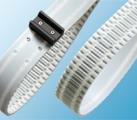

Products
back
Product
Details
Application
optibelt
ALPHA ATC

Users of the ATC system are able to install screw-on cleats quickly and easily via any tooth on-site. Using the ATC system, ATC inserts are placed in the applicable cut-out in the tooth in order to screw the screw-on cleat in place. These cut-outs are standard features for all teeth of the Optibelt ALPHA V timing belt in profile ATC10.
ATC inserts allow for the direct screwing-on of e.g. high-precision metal workpiece carriers without welded, specially manufactured cleats with inserts. Screw-on cleats are able to transmit more power than permanent cleats. Furthermore, the minimum pulley diameter is smaller despite the same connection size. Screw-on cleats for the ATC system are available on request.
Advantages and
standard characteristics
customised positioning of the cleats on-site
can be positioned via any tooth
detachable connection, removable for the exchange
of worn cleats, change of cleat shape
twist-proof bar/cleat connection
high stability via bar/clip mechanism
quick and easy installation
compatible connection size clip/cleats
use of present cleats is possible
quick punching of the belt top surface with the
ATC punching tool or the ATC punch pliers
Downloads
Optibelt
Product Brochures
english